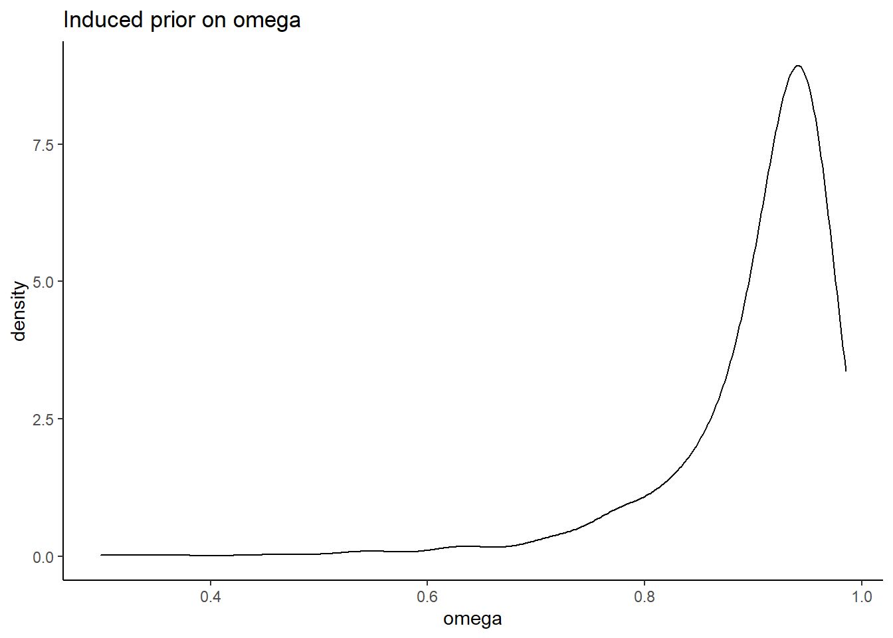
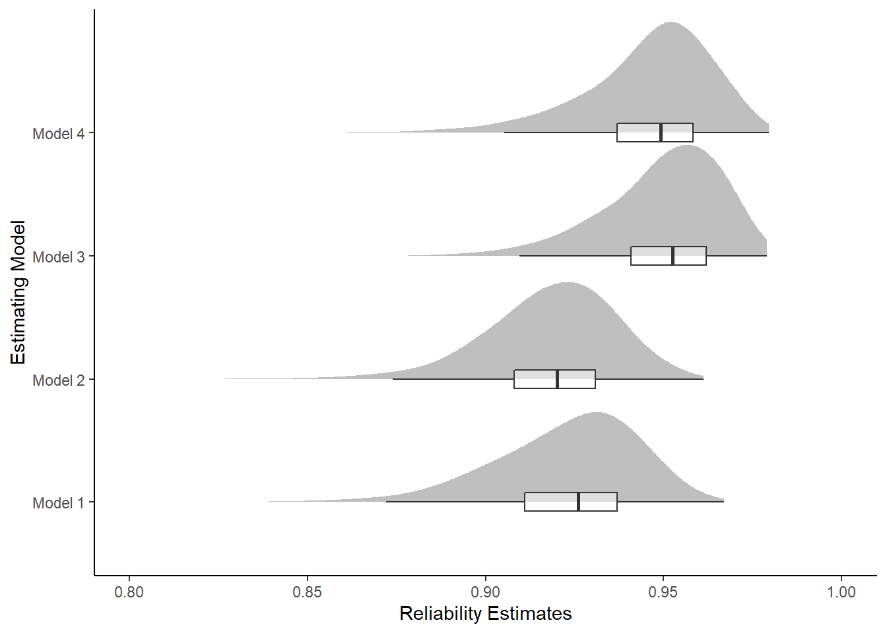
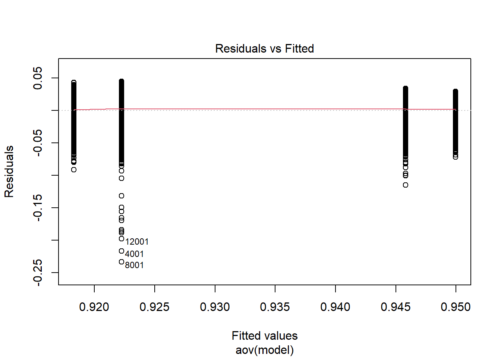
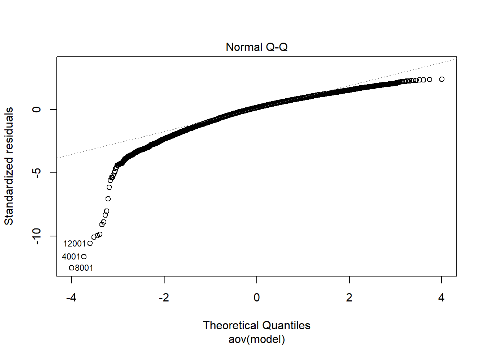
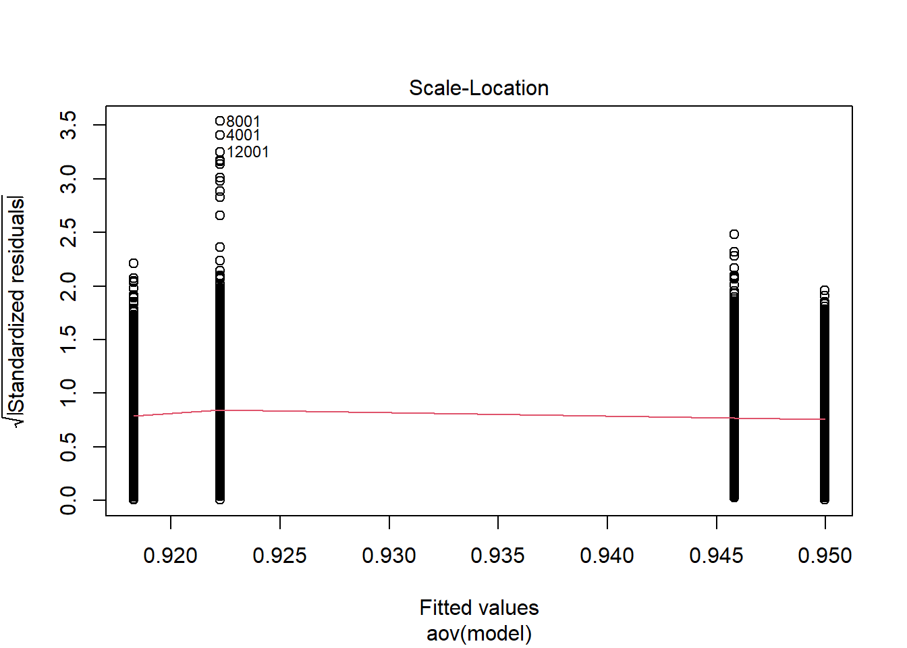
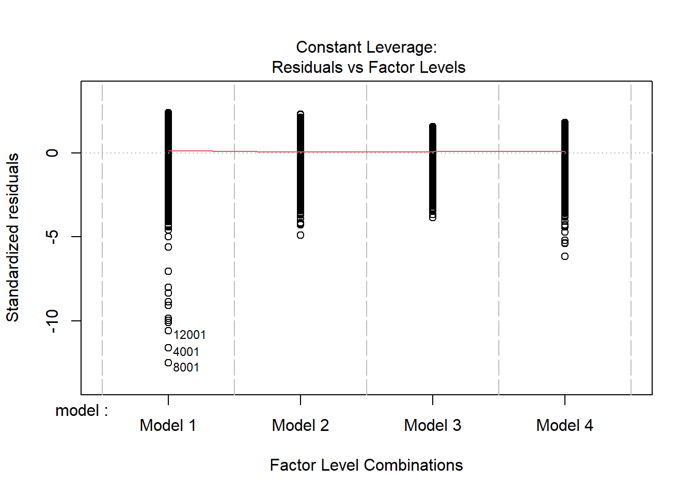
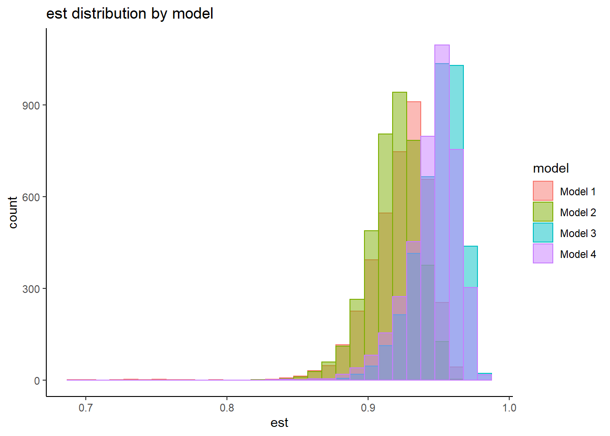
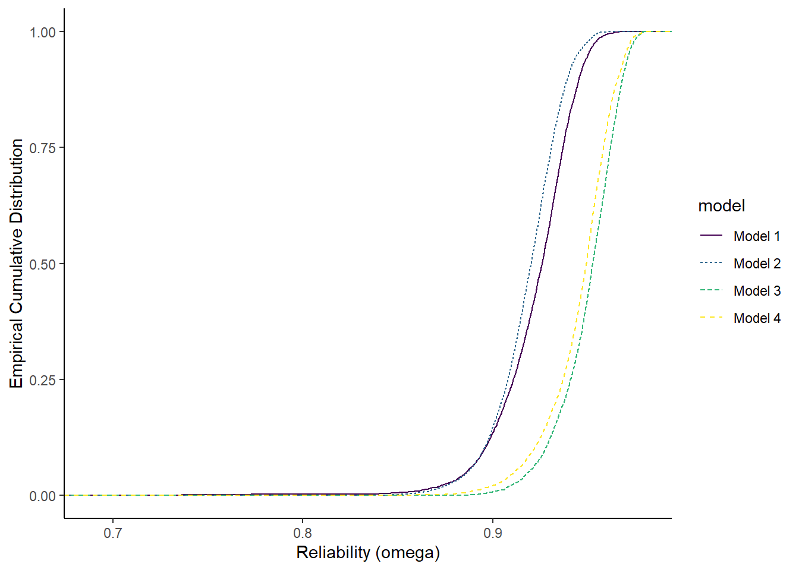
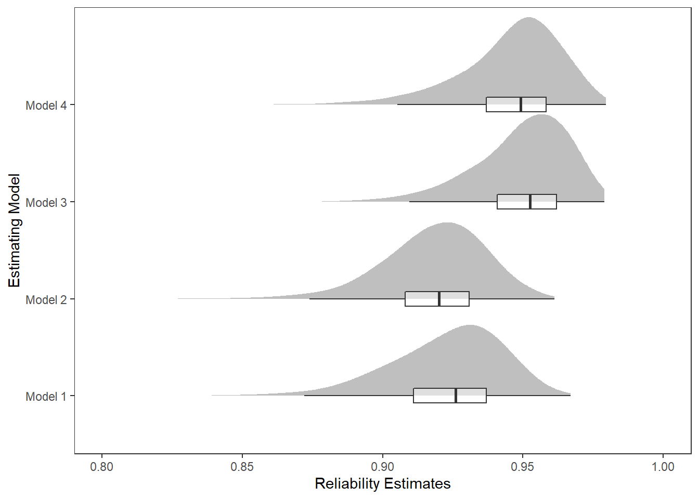

Last updated: 2022-01-20
Checks: 5 1
Knit directory: Padgett-Dissertation/
This reproducible R Markdown analysis was created with workflowr (version 1.6.2). The Checks tab describes the reproducibility checks that were applied when the results were created. The Past versions tab lists the development history.
Great job! The global environment was empty. Objects defined in the global environment can affect the analysis in your R Markdown file in unknown ways. For reproduciblity it’s best to always run the code in an empty environment.
The command set.seed(20210401) was run prior to running the code in the R Markdown file. Setting a seed ensures that any results that rely on randomness, e.g. subsampling or permutations, are reproducible.
Great job! Recording the operating system, R version, and package versions is critical for reproducibility.
Nice! There were no cached chunks for this analysis, so you can be confident that you successfully produced the results during this run.
Great job! Using relative paths to the files within your workflowr project makes it easier to run your code on other machines.
Tracking code development and connecting the code version to the results is critical for reproducibility. To start using Git, open the Terminal and type git init in your project directory.
This project is not being versioned with Git. To obtain the full reproducibility benefits of using workflowr, please see ?wflow_start.
# Load packages & utility functions
source("code/load_packages.R")
source("code/load_utility_functions.R")
# environment options
options(scipen = 999, digits=3)# true reliability value in population
getOmega <- function(lambda, N_items){
theta = 1-lambda**2
(lambda*N_items)**2/((lambda*N_items)**2 + N_items*theta)
}
# simulated induced prior on omega
prior_lambda <- function(){
y <- -1
while(y < 0){
y <- rnorm(1, 0, 2)
}
return(y)
}
prior_omega <- function(lambda, theta){
(sum(lambda)**2)/(sum(lambda)**2 + sum(theta))
}
nsim=1000
sim_omega <- numeric(nsim)
for(i in 1:nsim){
lam_vec <- c(
prior_lambda(), prior_lambda(), prior_lambda(),prior_lambda(), prior_lambda()
)
tht_vec <- rep(1, 5)
sim_omega[i] <- prior_omega(lam_vec, tht_vec)
}
prior_data <- data.frame(omega=sim_omega)
ggplot(prior_data, aes(x=omega))+
geom_density(adjust=2)+
labs(title="Induced prior on omega")+
theme_classic()
# read in data
o1 <- readr::read_csv(paste0(getwd(),"/data/study_4/extracted_omega_m1.csv"))Warning: Missing column names filled in: 'X1' [1]
-- Column specification --------------------------------------------------------
cols(
X1 = col_double(),
model_1 = col_double()
)o2 <- readr::read_csv(paste0(getwd(),"/data/study_4/extracted_omega_m2.csv"))Warning: Missing column names filled in: 'X1' [1]
-- Column specification --------------------------------------------------------
cols(
X1 = col_double(),
model_2 = col_double()
)o3 <- readr::read_csv(paste0(getwd(),"/data/study_4/extracted_omega_m3.csv"))Warning: Missing column names filled in: 'X1' [1]
-- Column specification --------------------------------------------------------
cols(
X1 = col_double(),
model_3 = col_double()
)o4 <- readr::read_csv(paste0(getwd(),"/data/study_4/extracted_omega_m4.csv"))Warning: Missing column names filled in: 'X1' [1]
-- Column specification --------------------------------------------------------
cols(
X1 = col_double(),
model_4 = col_double()
)dat_omega <- cbind(o1[,2], o2[,2], o3[,2], o4[,2])
plot.dat <- dat_omega %>%
pivot_longer(
cols=everything(),
names_to = "model",
values_to = "est"
) %>%
mutate(
model = factor(model, levels=paste0('model_',1:4), labels=paste0('Model ',1:4))
)
sum.dat <- plot.dat %>%
group_by(model) %>%
summarise(
Mean = mean(est),
SD = sd(est),
Q025 = quantile(est, 0.025),
Q1 = quantile(est, 0.25),
Median = median(est),
Q3 = quantile(est, 0.75),
Q975 = quantile(est, 0.975),
)
kable(sum.dat,format = "html", digits=3) %>%
kable_styling(full_width = T)| model | Mean | SD | Q025 | Q1 | Median | Q3 | Q975 |
|---|---|---|---|---|---|---|---|
| Model 1 | 0.922 | 0.022 | 0.875 | 0.911 | 0.926 | 0.937 | 0.953 |
| Model 2 | 0.918 | 0.018 | 0.877 | 0.908 | 0.920 | 0.931 | 0.949 |
| Model 3 | 0.950 | 0.016 | 0.911 | 0.941 | 0.953 | 0.962 | 0.974 |
| Model 4 | 0.946 | 0.018 | 0.902 | 0.937 | 0.949 | 0.958 | 0.972 |
ggplot(plot.dat,aes(x=est, y=model, group=model))+
ggdist::stat_halfeye(
adjust=2, justification=0,.width=0, point_colour=NA,
normalize="all", fill="grey75"
) +
geom_boxplot(
width=.15, outlier.color = NA, alpha=0.5
) +
labs(x="Reliability Estimates",
y="Estimating Model")+
lims(x=c(0.80, 1))+
theme_classic()Warning: Removed 11 rows containing missing values (stat_slabinterval).Warning: Removed 11 rows containing non-finite values (stat_boxplot).
anova_assumptions_check(
dat = plot.dat, outcome = 'est',
factors = c('model'),
model = as.formula('est ~ model'))
=============================
Tests and Plots of Normality:
Shapiro-Wilks Test of Normality of Residuals:
Shapiro-Wilk normality test
data: res
W = 0.9, p-value <0.0000000000000002
K-S Test for Normality of Residuals:
One-sample Kolmogorov-Smirnov test
data: aov.out$residuals
D = 0.5, p-value <0.0000000000000002
alternative hypothesis: two-sided`stat_bin()` using `bins = 30`. Pick better value with `binwidth`.
=============================
Tests of Homogeneity of Variance
Levenes Test: model
Levene's Test for Homogeneity of Variance (center = "mean")
Df F value Pr(>F)
group 3 59.1 <0.0000000000000002 ***
15996
---
Signif. codes: 0 '***' 0.001 '**' 0.01 '*' 0.05 '.' 0.1 ' ' 1fit <- aov(est ~ model, data=plot.dat)
summary(fit) Df Sum Sq Mean Sq F value Pr(>F)
model 3 3.12 1.04 2988 <0.0000000000000002 ***
Residuals 15996 5.56 0.00
---
Signif. codes: 0 '***' 0.001 '**' 0.01 '*' 0.05 '.' 0.1 ' ' 1# tukey
TukeyHSD(fit) Tukey multiple comparisons of means
95% family-wise confidence level
Fit: aov(formula = est ~ model, data = plot.dat)
$model
diff lwr upr p adj
Model 2-Model 1 -0.00396 -0.00503 -0.00288 0
Model 3-Model 1 0.02772 0.02665 0.02879 0
Model 4-Model 1 0.02358 0.02250 0.02465 0
Model 3-Model 2 0.03168 0.03060 0.03275 0
Model 4-Model 2 0.02753 0.02646 0.02860 0
Model 4-Model 3 -0.00414 -0.00522 -0.00307 0# ets^2
summary(lm(est ~ model, data=plot.dat))
Call:
lm(formula = est ~ model, data = plot.dat)
Residuals:
Min 1Q Median 3Q Max
-0.23346 -0.00988 0.00280 0.01283 0.04480
Coefficients:
Estimate Std. Error t value Pr(>|t|)
(Intercept) 0.922239 0.000295 3127.29 <0.0000000000000002 ***
modelModel 2 -0.003955 0.000417 -9.48 <0.0000000000000002 ***
modelModel 3 0.027720 0.000417 66.47 <0.0000000000000002 ***
modelModel 4 0.023576 0.000417 56.53 <0.0000000000000002 ***
---
Signif. codes: 0 '***' 0.001 '**' 0.01 '*' 0.05 '.' 0.1 ' ' 1
Residual standard error: 0.0187 on 15996 degrees of freedom
Multiple R-squared: 0.359, Adjusted R-squared: 0.359
F-statistic: 2.99e+03 on 3 and 15996 DF, p-value: <0.0000000000000002Next, instead of treating the posterior
ggplot(plot.dat, aes(est, group=model, color=model, linetype=model)) +
stat_ecdf(
geom = "step",
pad=T
) +
labs(x="Reliability (omega)",
y="Empirical Cumulative Distribution")+
scale_color_viridis_d()+
theme_classic()
print(
xtable(
sum.dat,
, caption = c("Summary of posterior distribution of reliability")
,align = "llrrrrrrr"
),
include.rownames=F,
booktabs=T
)% latex table generated in R 4.0.5 by xtable 1.8-4 package
% Thu Jan 20 13:00:38 2022
\begin{table}[ht]
\centering
\begin{tabular}{lrrrrrrr}
\toprule
model & Mean & SD & Q025 & Q1 & Median & Q3 & Q975 \\
\midrule
Model 1 & 0.92 & 0.02 & 0.88 & 0.91 & 0.93 & 0.94 & 0.95 \\
Model 2 & 0.92 & 0.02 & 0.88 & 0.91 & 0.92 & 0.93 & 0.95 \\
Model 3 & 0.95 & 0.02 & 0.91 & 0.94 & 0.95 & 0.96 & 0.97 \\
Model 4 & 0.95 & 0.02 & 0.90 & 0.94 & 0.95 & 0.96 & 0.97 \\
\bottomrule
\end{tabular}
\caption{Summary of posterior distribution of reliability}
\end{table}p <- ggplot(plot.dat,aes(x=est, y=model, group=model))+
ggdist::stat_halfeye(
adjust=2, justification=0,.width=0, point_colour=NA,
normalize="all", fill="grey75"
) +
geom_boxplot(
width=.15, outlier.color = NA, alpha=0.5
) +
labs(x="Reliability Estimates",
y="Estimating Model")+
lims(x=c(0.8, 1))+
theme_bw() +
theme(panel.grid = element_blank())
pWarning: Removed 11 rows containing missing values (stat_slabinterval).Warning: Removed 11 rows containing non-finite values (stat_boxplot).
ggsave(filename = "fig/study4_posterior_omega.pdf",plot=p,width = 7, height=4,units="in")Warning: Removed 11 rows containing missing values (stat_slabinterval).
Warning: Removed 11 rows containing non-finite values (stat_boxplot).ggsave(filename = "fig/study4_posterior_omega.png",plot=p,width = 7, height=4,units="in")Warning: Removed 11 rows containing missing values (stat_slabinterval).
Warning: Removed 11 rows containing non-finite values (stat_boxplot).ggsave(filename = "fig/study4_posterior_omega.eps",plot=p,width = 7, height=4,units="in")Warning: Removed 11 rows containing missing values (stat_slabinterval).
Warning: Removed 11 rows containing non-finite values (stat_boxplot).Warning in grid.Call.graphics(C_polygon, x$x, x$y, index): semi-transparency is
not supported on this device: reported only once per page
sessionInfo()R version 4.0.5 (2021-03-31)
Platform: x86_64-w64-mingw32/x64 (64-bit)
Running under: Windows 10 x64 (build 22000)
Matrix products: default
locale:
[1] LC_COLLATE=English_United States.1252
[2] LC_CTYPE=English_United States.1252
[3] LC_MONETARY=English_United States.1252
[4] LC_NUMERIC=C
[5] LC_TIME=English_United States.1252
attached base packages:
[1] stats graphics grDevices utils datasets methods base
other attached packages:
[1] car_3.0-10 carData_3.0-4 mvtnorm_1.1-1
[4] LaplacesDemon_16.1.4 runjags_2.2.0-2 lme4_1.1-26
[7] Matrix_1.3-2 sirt_3.9-4 R2jags_0.6-1
[10] rjags_4-12 eRm_1.0-2 diffIRT_1.5
[13] statmod_1.4.35 xtable_1.8-4 kableExtra_1.3.4
[16] lavaan_0.6-7 polycor_0.7-10 bayesplot_1.8.0
[19] ggmcmc_1.5.1.1 coda_0.19-4 data.table_1.14.0
[22] patchwork_1.1.1 forcats_0.5.1 stringr_1.4.0
[25] dplyr_1.0.5 purrr_0.3.4 readr_1.4.0
[28] tidyr_1.1.3 tibble_3.1.0 ggplot2_3.3.5
[31] tidyverse_1.3.0 workflowr_1.6.2
loaded via a namespace (and not attached):
[1] minqa_1.2.4 TAM_3.5-19 colorspace_2.0-0
[4] rio_0.5.26 ellipsis_0.3.1 ggridges_0.5.3
[7] rprojroot_2.0.2 fs_1.5.0 rstudioapi_0.13
[10] farver_2.1.0 fansi_0.4.2 lubridate_1.7.10
[13] xml2_1.3.2 splines_4.0.5 mnormt_2.0.2
[16] knitr_1.31 jsonlite_1.7.2 nloptr_1.2.2.2
[19] broom_0.7.5 dbplyr_2.1.0 ggdist_3.0.1
[22] compiler_4.0.5 httr_1.4.2 backports_1.2.1
[25] assertthat_0.2.1 cli_2.3.1 later_1.1.0.1
[28] htmltools_0.5.1.1 tools_4.0.5 gtable_0.3.0
[31] glue_1.4.2 Rcpp_1.0.7 cellranger_1.1.0
[34] jquerylib_0.1.3 vctrs_0.3.6 svglite_2.0.0
[37] nlme_3.1-152 psych_2.0.12 xfun_0.21
[40] ps_1.6.0 openxlsx_4.2.3 rvest_1.0.0
[43] lifecycle_1.0.0 MASS_7.3-53.1 scales_1.1.1
[46] ragg_1.1.1 hms_1.0.0 promises_1.2.0.1
[49] parallel_4.0.5 RColorBrewer_1.1-2 curl_4.3
[52] yaml_2.2.1 sass_0.3.1 reshape_0.8.8
[55] stringi_1.5.3 highr_0.8 zip_2.1.1
[58] boot_1.3-27 rlang_0.4.10 pkgconfig_2.0.3
[61] systemfonts_1.0.1 distributional_0.3.0 evaluate_0.14
[64] lattice_0.20-41 labeling_0.4.2 tidyselect_1.1.0
[67] GGally_2.1.1 plyr_1.8.6 magrittr_2.0.1
[70] R6_2.5.0 generics_0.1.0 DBI_1.1.1
[73] foreign_0.8-81 pillar_1.5.1 haven_2.3.1
[76] withr_2.4.1 abind_1.4-5 modelr_0.1.8
[79] crayon_1.4.1 utf8_1.1.4 tmvnsim_1.0-2
[82] rmarkdown_2.7 grid_4.0.5 readxl_1.3.1
[85] CDM_7.5-15 pbivnorm_0.6.0 git2r_0.28.0
[88] reprex_1.0.0 digest_0.6.27 webshot_0.5.2
[91] httpuv_1.5.5 textshaping_0.3.1 stats4_4.0.5
[94] munsell_0.5.0 viridisLite_0.3.0 bslib_0.2.4
[97] R2WinBUGS_2.1-21